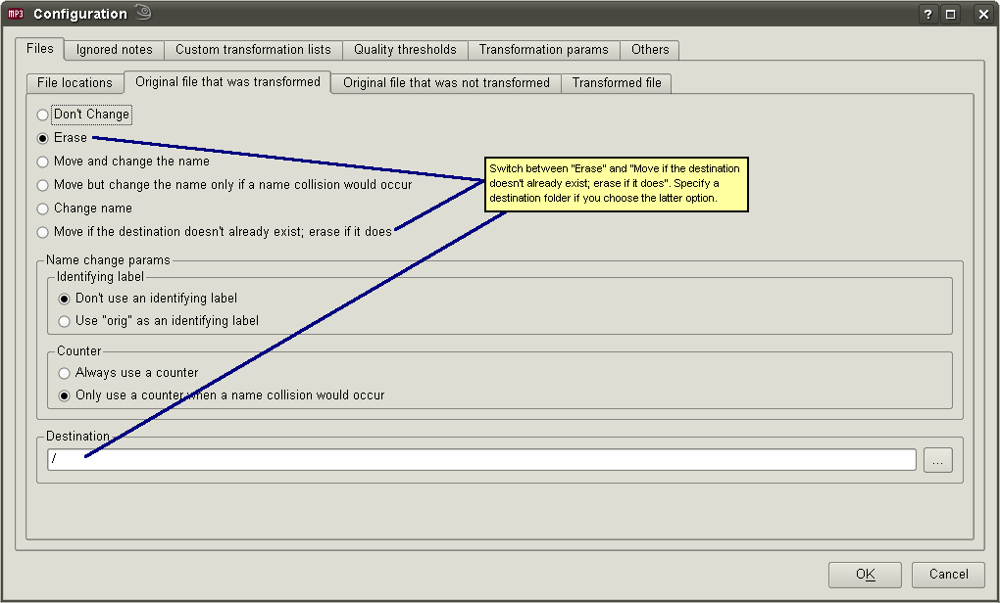

Here you can say what should happen with the various files when a transformation is applied. There are two "modes" to interact with the settings: a "Simple view", where all you can say is if you want backups or not; and a "Full view", which has plenty of options.
The "Simple view" screenshot shown above should be pretty self-explanatory. You can't select the third option. It is selected automatically if you make changes in the "Full view" and those changes don't match exactly one of the first 2 options.
Here's what the "Full view" looks like:

The wording might not be the best, but what it's trying to capture is that when you apply a transformation to a file you don't really change it. Rather, a new file gets created first, then the original one is erased and the newly created one is renamed. At least that's the default, because using these options can make things quite different. Here's how this works: first, it is determined if the transformation would make any change to the file. If so, the "changed file" gets created. Then something is done to the original file, as indicated in "Original file that would be changed", the default being to erase it. Then something is done to the "changed file", based on its own settings, the default being to rename it so it matches the original file. If the option in "Temporary files" was to create temporary files, the changed file also gets copied as a "temporary file". If the transformation would leave the file unchanged, then no files get created but the original file might be erased or moved, but by default it is not touched. In the first case, when a changed file gets created, pairs of several-seconds-long "before" and "after" pairs might get created as well, if so configured ("Compare files", under "Temporary files") and the transformation is able to create them (currently only several transformations that change audio data create these "compare files".)
You can play with these settings to do comparisons or more esotheric things, like moving or copying to another directory all the files that have at least 2 embedded pictures. I can provide more details if anybody needs them.